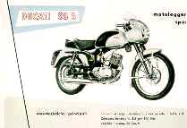
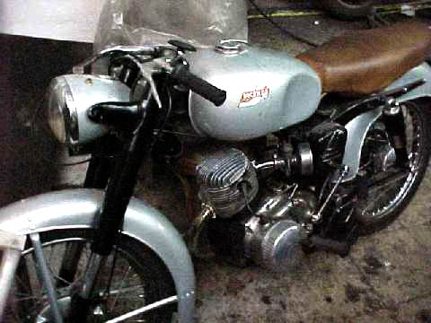

Años de fabricación: 1953-1959
Motor: 4 tiempos, monocilíndrico, refrigerado por aire -diámetro por carrera 49 x 52 mm - cilindrada total 98,06 cc - relación de compresión 8,5:1 - distribución por árbol de levas en el bloque y varillas empujadoras con dos válvulas en culata - engrase con aceite en el cárter a presión y radiador frontal (modelo sport) - carburador Dell´Orto MA 18- embrague multidisco en baño de aceite - cambio de 4 marchas - transmisión primaria por engranajes - transmisión secundaria por cadena.
Parte ciclo: chasis "espina de pescado" en chapa - horquilla delantera telehidráulica - horquilla trasera oscilante con 2 amortiguadores hidráulicos - freno delantero de tambor Ø 158mm - freno trasero de tambor Ø 135mm - neumático delantero de 2,50 x 17" - neumático trasero 2,50 x 17".
Dimensiones: distancia entre ejes (batalla) 1260 mm - peso en seco 78 kg - depósito de combustible 10 litros.
Prestaciones: potencia 6,5 CV a 7800 rpm - velocidad máxima 90 km/h en posición normal - consumo 3 litros/100 km.
Colores: plata y negro, con un fileteado verde para separar ambos colores.
Principales diferencias entre el modelo turismo (TL) y el sport: el modelo sport incorporaba un radiador de aceite, llantas de aluminio, amortiguación hidraúlica, frenos mejorados, manillar deportivo, asiento biplaza, cambio de 4 marchas, mayor relación de compresión y un caracter sport. Hoy en día son escasas las unidades que siguen vivas de estos modelos haciendo difícil su restauración. En Italia son más fáciles de encontrar. VOLVER A MODELOS.
